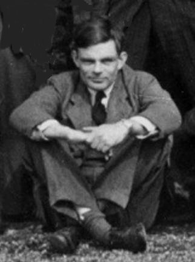

El Enigma de Turing

El padre de la computación era gay. El hacker que descifró los códigos secretos de los Nazis fue juzgado y condenado en base a una serie de prejuicios e intolerancia. El genio matemático murió cuando tenía apenas 41 años de edad, si fue empujado al suicido o por accidente, es una pregunta abierta nuevamente.
Tradicionalmente se ha considerado su muerte un suicidio, aunque su madre sostuvo por mucho tiempo que fue un accidente. El terreno queda abierto para la especulación conspirativa, después de todo Turing manejaba muchos secretos militares, después de todo su muerte era conveniente.
La búsqueda de una vida
En 1928 Alan Turing era un solitario joven de 16 años estudiando en Sherborne School, un instituto donde el foco de interés eran las letras y la formación clásica, las ciencias eran despreciadas. Alan tenía otros intereses que chocaban con la atmósfera de la escuela. En ese tiempo había leido la divulgación de la obra de Einstein sobre la teoría de la relatividad. Una de las cosas que le llamó la atención del trabajo de Einstein es cómo este gran científico había dudado de los axiomas de la física newtoniana. Notó que Einstein evitaba discusiones filosófica sobre que era tiempo y espacio y se concentraba en algo que pudiera ser hecho.
El joven Turing desarrolla una pasión por la ciencia, quería completar las ideas de Einstein, de hecho formuló corolarios a la teoría general de la relatividad que Einstein aún no había publicado. Sin embargo, estas inquietudes no encontraban en sus profesores el soporte necesario. Pero había un joven, apenas un año mayor que él, delgado y enfermizo, que tomaba las ideas científicas con la misma intensidad que Alan. Todo indica que este joven era más brillante que el propio Alan. Se trataba de Christopher Morcom. Encontrarse con él permitión que por primera vez Alan Turing se comunicara profundamente con otro ser humano distinto a su madre. Morcom fue su primer amor, un sentimiento que mantuvo en secreto sin revelarselo nunca. Samebos mucho de esta relación de amistad gracias al testimonio del mismo Turing, quien escribió en 1930 una serie de cartas a la madre de Morcom, después de la inesperada muerte de Christopher producto de una tuberculosis bovina, contraida por beber leche infectada varios años antes.
La muerte de Morcom inspiró a Turing a mejorar en sus estudios. En una de las cartas le solicita a la madre de Christopher una fotografía del joven, la que tenía en su escritorio como inspiración y acícate para estudiar y poder llegar a Cambridge.
Esta pérdida además le afectó profundamente al punto que se obsesionó con descubrir la naturaleza de la conciencia, su estructura y origen. En sus cartas a la señora Morcom se revela que él anhelaba saber qué había sido de Christopher, de ese aspecto esencial de él: la mente.
Estudio
Turing decidió estudiar filosofía, metafísica, biología y sobretodo matemática, lógica y física cuántica. Quería entender cómo se encarnaba eso que llamamos mente. Además como le gustaba jugar y explorar mecanismo mecánicos, es natural que desarrollara su idea central de que la mente es una máquina. La pregunta era cómo una máquina podía evolucionar de operaciones mentales simples y predecibles a un nivel de complejidad capaz de producir grandes innovaciones.
Su ingreso a King College, en Cambridge, le permitió encontrar un ambiente donde explorar libremente su pensamiento y exploraciones. A los 22 años ya había escrito un importante contribución al campo de las probabilidades, lo que le permitió obtener un fellowship en la universidad. Pero además encontró en el ambiente universitario un mayor aceptación a sus excentricidades y tolerancia a su identidad sexual, a pesar de que en Inglaterra la homosexualidad era ilegal en aquel tiempo.
Fue en 1935, en su periodo de post grado en Cambridge que atiende una charlas de Max Newman sobre las “Fundaciones de las Matemáticas”, donde se incluía el debate entre Gödel y Hilbert. En esa charla recibe noticias del tercer problema propuesto por Hilbert, el de la decibilidad. Es este periodo que su idea de visualizar un algoritmo como una máquina sorprende al mundo matemático, y sienta las bases para la creación de los primeros computadores.
Viaja a Princeton, para continuar sus estudios y obtener su PhD. Y aunque sigue trabajando en matemáticas, simultáneamente explora el desarrollo y aplicación de dispositivos computadores. La guerra le da la oportunidad de diseñar sus primeras máquinas concretas, trabajando en el descifrado de los códigos Enigma, en Bletchey Park.
En aquel tiempo Turing presenta al equipo de criptógrafos de Tommy Flowers, quien guiado por Max Newman, desarrolla el primer computador digital del mundo, Colossus.

Colossus, el primer computador digital programable
Después de la guerra se le pide que diseñe un computador para el Laboratorio Nacional de Física en Londres, este proyecto fue conocido como ACE (Automatic Computing Engine). El ACE era una máquina extraordinaria con un diseños más avanzado y sofisticado que el computador EDVAC desarrollado por John Von Neumann en Estados Unidos. Turing pensaba que era crucial la velocidad y el tamaño de la memoria, propuso que esta tuviera el equivalente en capacidad a 25 KiloBytes, y una velocidad de 1 MHz. A diferencia del EDVAC, la ACE tenía soporte para subrutinas, y un sistema de instrucciones abreviado. Propuso que el trabajo fuera liderado por Tommy Flowers, cuyo trabajo en Colossus era secreto.
Lamentablemente la burocracia, y el desconocimiento de Colossus, hicieron dudar del éxito del diseño de Turing, se realizaron varias modificaciones y se construyó una versión más simple. Turing se desilusión y retornó a Cambridge donde enfocó sus investigaciones en la neurología y la noción del cerebro electrónico.
Cerebros Electrónicos
En 1948 su amigo Max Newman le invitó a trabajar en el desarrollo del Mark I, un computador desarrollado en la Universidad de Manchester. En este tiempo Turing participa en el desarrolo de software programando para el proyecto.
En 1946 Lord Mountbatten había introducido el término cerebro electrónico, al especular sobre el desarrollo de los primitivos computadores de aquel tiempo. En 1949 el pionero de la neuro cirugía, Sir Geoffrey Jefferson, se propuso desprestigiar al proyecto de Manchester escribiendo en un discurso:
“No será hasta que una máquina pueda escribir un soneto, o componer un concierto a través de los cuales los pensamientos y emociones broten, y no sea sólo una azarosa emisión de símbolos, que podremos estar de acuerdo en que la máquina iguala al cerebro, es decir, no sólo es escribirlos, sino que entender qué ha escrito. Ninguna máquina puede sentir placer de su éxito, dolor cuando sus válvulas se funden, calor ante el halago, sentirse miserable por sus errores, atraída por el sexo, enojada o miserable cuando no puede obtener lo que quiere.”
Newman respondió con un artículo en el Times donde detalla los paralelos del Mark I y el cerebro humano. El artículo de Newman incluye una entrevista a Turing quien declaró
Esto es solo un anticipo de lo que vendrá, y sólo la sombra de lo que será. Tenemos que adquirir experiencia con la máquina antes de realmente saber sus capacidades. Tomará años antes que establezcamos las nuevas posibilidades, pero no veo porque no debería entrar en cualquiera de los campos normalmente cubiertos por el intelecto humano y competir eventualmente en términos iguales.

El Test de Turing
En 1950 Turing publica su influyente artículo “Computing Machinery and Intelligence”, donde propone su famoso test. Con el fin de resolver las objeciones de personas como Sir Jefferson, y otros, decide tomar un camino más pragmático. Dado que las palabras “máquina” y “pensamiento” tienen distintas interpretaciones para cada persona, en vez de preguntar “¿pueden las máquinas pensar?”, Turing sugiere que se cambie la pregunta por algo que sea menos ambiguo y que esté intimamente relacionado.
En vez de determinar si una máquina está pensando, Turing sugiere que nos pregungemos si una máquina puede ganar un juego, llamado “El Juego de Imitación”. Este juego involucra a tres participantes en tres salas aisladas: un computador (que está siendo testeado), un humano, y un juez humano. El juez conversa con ambos, el computador y el otro humanos a través de un terminal. Ambos, el computador y el humano tratan de convencer al juez de que son humanos. Si el juez no puede consisténtemente decidir cuál es cuál, entonces el computador gana el juego.
Aunque actualmente se considera el test como una prueba no adecuada, su propuesta inspiró mucho trabajo en el campo de la inteligencia artificial. Incluso hoy en día una versión inversa de este test es usada en contra nuestra en la forma de los molestos CAPTCHA usados para ingresar información en formularios web.

CAPTCHA, no creo que Turing estuviera pensando en este pernicioso uso de sus ideas...
Morfo Génesis
Aunque su interés por los computadores no decayó, en sus últimos años enfocó su mente a nuevas áreas de exploración en el campo de la biología. La intriga partió con la aparente expresión que tienen en la naturaleza los números de Fibonacci, sobretodo en la forma y estructura de las plantas, donde es más evidente. Inspirado por el biólogo y matemático D’Arcy Thompson exploró la noción de que la forma biológica era el producto de un proceso químico. En 1952 publicó un artículo titulado “Las Bases Químicas de la Morfo Génesis”.
Turing era un químico experimentado, era un apasionado por la experimentación química desde muy joven, y tenía un pequeño laboratorio en su dormitorio. Su trabajo en morfogénesis resultó provocador y original. Sólo después de 40 años se encontraron evidencias científica de sus propuestas en lo que se conoce como las estructuras de Turing y los Patrones de Turing.

Un patrón de Turing generado por un “MorphoGen”, calculado a mano porTuring en su artículo de 1952 sobre morfogénesis
Por cierto, este trabajo es sólo otra manifestación de su búsqueda de una interpretación matemática y mecánica de la vida y sus estructuras. Todo esto es una búsqueda de las herramientas que permitan desarrollar vida e inteligencia artificial.

Patrones de Turing identificado en la piel de peces
¿Acaso Turing buscaba construir un alma gemela con la cual compartir sus sentimientos más profundos? ¿Se sentía tan sólo e incomprendido en este mundo que quería crear un alma sintética con la cual compartir su vida? ¿Querría resucitar a su querido Christopher Morcom encarnándolo en una de sus computadoras?
El misterio de su muerte
En 1952 durante la investigación de un asalto a su casa reveló que uno de los jóvenes envueltos en el incidente podría haber sido su joven amante de 19 años. Cómo los actos homosexuales eran ilegales en Inglaterra en esa época Turing fue arrestado inmediatamente y sometido a proceso. Fue encontrado culpable de acuerdo a la “ley de práctica de actos indecentes”. Para no caer en prisión aceptó someterse a terapia siquiátrica y un tratamiento hormonal. Uno de los efectos laterales, declarado por el propio Turing a sus amigos, es que desarrolló impotencia y le crecieron pechos (ginecomastia).
Al ser declarado criminal, Turing perdió todas sus credenciales de seguridad y no se le permitió trabajar en proyectos criptográficos y en el desarrollo de computadores para el gobierno. Turing fue estigmatizado, la inteligencia británica consideró que por su condición de homosexual estaba más expuesto al chantaje y por lo tanto se le considero una persona de alto riesgo. Turing era poseedor de mucha información confidencial.
Se ha postulado que su muerte fue un asesinato montado por las fuerzas de seguridad británicas. Su madre la considera un accidente.
Oficialmente Turing murió suicidándose de una forma extraña, mordiendo una manzana envenenada con cianuro. De acuerdo a Andrew Hodges la película Blanca Nieves era su favorita, y varios conocidos reportaron haberle escuchado cantar la macabra cantinela de la bruja: “Moja la manzana en la poción, que la muerte durmiente penetre en profusión.”
El misterio de su muerte sigue ahí. De acuerdo al testimonio de su amigo Robin Gandy, quien compartió con Turing el fin de semana antes de su muerte, no había signos que revelaran sus intenciones suicidas, y al contrario se le veía de buen humor, y a pesar de las molestias y el año de tratamiento hormonal, parecía estar bien. Incluso se le notaba más feliz de lo normal.
Turing manejaba cianuro, y era un experimentador descuidado. En una ocasión se electrocutó, y probaba los compuestos con su lengua para identificarlos. En esa época realizaba electrólisis en soluciones con cianuro, y galvanizaba cucharas con oro, un proceso que requiere cianuro de potasio. Los experimentos de electrólisis estaban colgados de las luces de su habitación. Es probable, como sugirió su madre, que haya colocado la manzana accidentalmente en contacto con el cianuro. O quizás, y esto es más probable, haya inhalado accidentalmente vapores de cianuro desde el líquido en ebullición. La distribución del veneno en los órganos de Turing, tras la autopsia, son más consistente con una muerte por inhalación que por ingestión de acuerdo al profesor Jack Copeland, quien expuso en Oxford una nueva teoría sobre la muerte deTuring en los últimos días.
Probablemente nunca sabremos la causa de la muerte de Turing, como tampoco sabremos cuál habría sido su legado de haber seguido vivo hasta nuestros días. Es probable que sus aporte habrían sido sorprendentes, considerando que murió tan joven.
Si Turing murió por culpa de la intolerancia, es una pregunta abierta, pero sí sabemos que la intolerancia le afectó profundamente. Como dijo un colega suyo en Bletchey Park, afortunadamente las autoridades de ese tiempo desconocían el hecho de que Turing era homosexual, o de lo contrario la guerra habría durado varios años más.
Tampoco podemos saber sus motivaciones personales, pero todo apunta a que su motivación de desarrollar una máquina inteligente puede tener un origen sicológico más profundo del que sospechamos.
No es posible separar la obra de Turing de su realidad como persona, no se puede entender su trabajo sin entender su vida. Eso lo convierte en una persona compleja, valiosa y admirable.
Con esto terminamos este humilde homenaje al padre de la computación, apenas he tocado la superficie de una vida compleja, llena de detalles y logros. Les dejo invitados a seguir investigando y conociendo el aporte de este gran pensador.
Lee también:
Fuentes Bibliográficas:
-
Alan Turing´s Patterns in Nature and Beyond, artículo en Wired Science
-
Controversia sobre Mentes y Máquinas, Varios Autores, en este libro se recoge el artículo de Turing donde describe el juego de imitación.